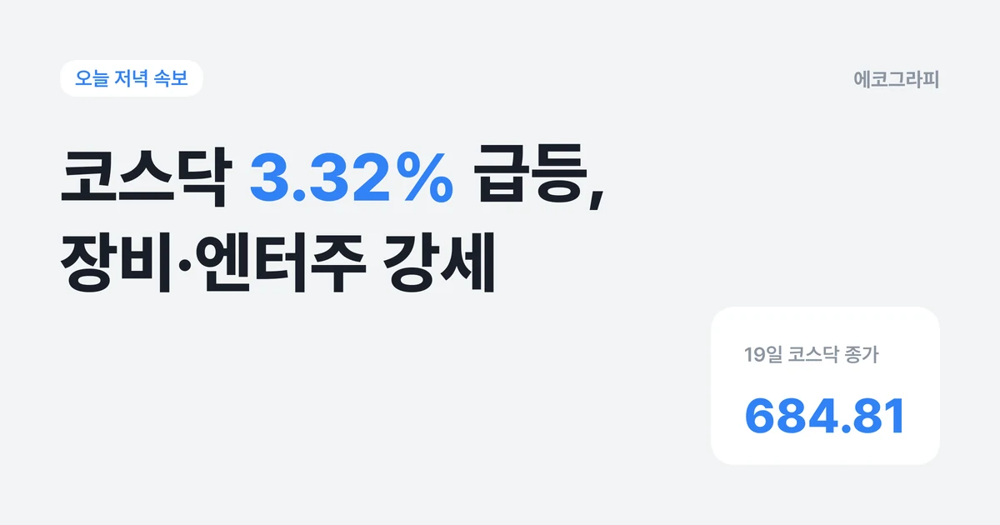
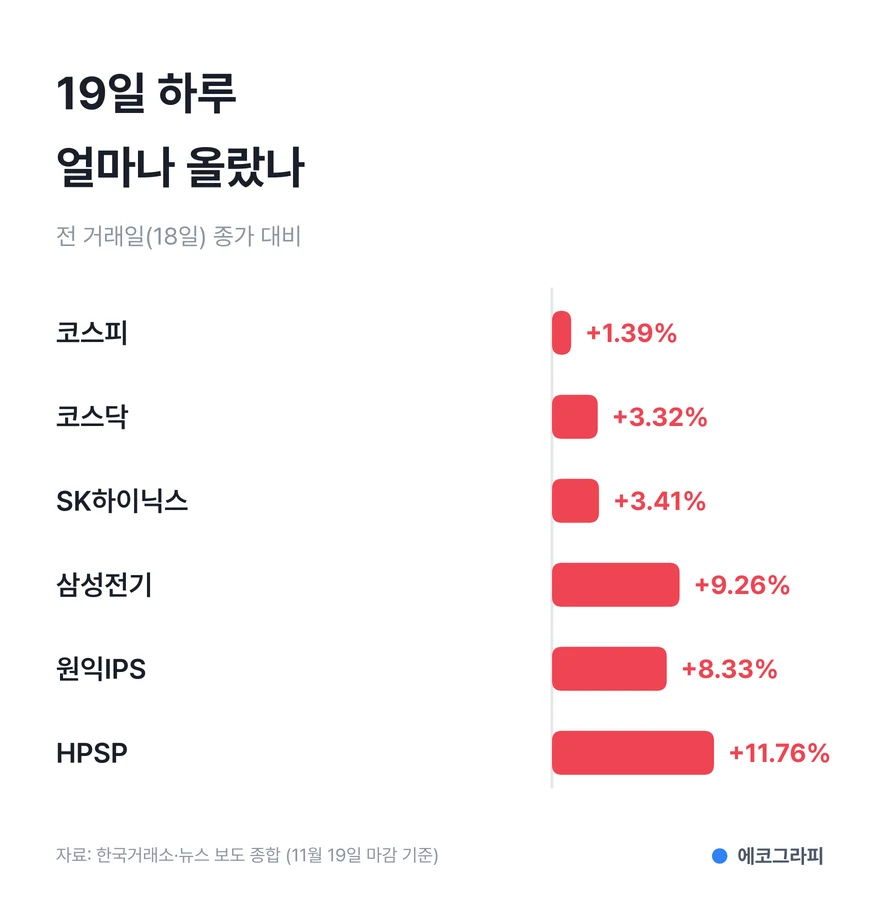
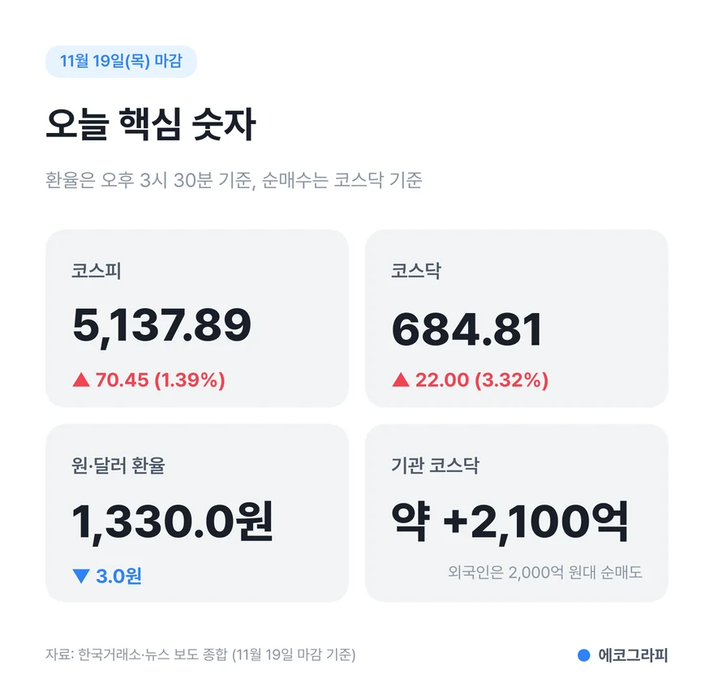
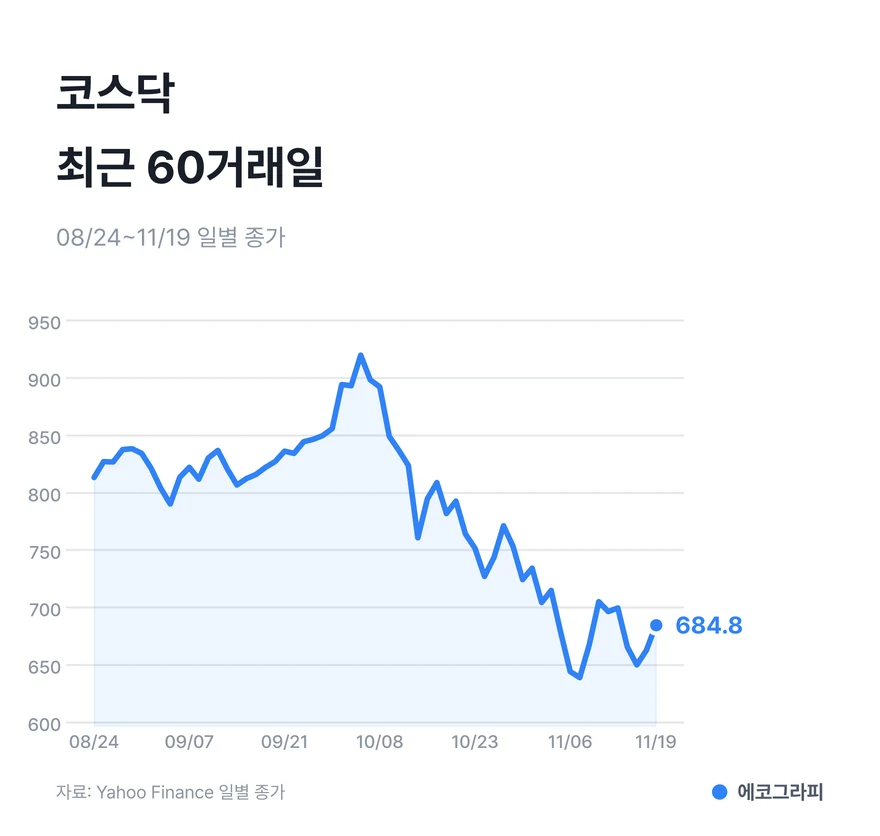

오늘은 수능 날이라 증시가 평소보다 1시간 늦게 문을 열었어요. 출발은 조금 오른 채였지만 오전에 두 지수 모두 하락으로 돌아서며 흔들렸어요. 그런데 오후로 갈수록 사는 힘이 커졌고, 코스닥은 결국 22포인트(3.32%) 오른 684.81에 끝났어요. 하루 3% 넘게 오른 건 꽤 큰 움직임이에요.
오른 이유는 크게 두 가지예요. 하나는 반도체예요. 삼성전기·SK하이닉스 같은 대형 반도체주가 오르자, 코스닥에 많은 반도체 장비·부품 회사들이 더 크게 올랐어요. 나스닥 상장을 앞둔 앤트로픽 소식으로 AI 투자 기대가 다시 살아난 것도 힘이 됐다는 분석이 나왔어요.
다른 하나는 중국이에요. 18일 한중 정상회담을 계기로 두 나라가 FTA 서비스·투자 후속 협상을 사실상 마무리했어요. 영화·게임에서 한국 기업을 불리하게 대하지 않고, 드라마·예능까지 함께 만들 수 있게 범위를 넓히는 내용이에요. 그동안 막혀 있던 한류 콘텐츠가 중국에 다시 들어갈 수 있다는 기대에 엔터·콘텐츠주가 한꺼번에 뛰었어요.


최근 흐름을 같이 보면, 코스닥은 16일 하루에 4.86% 급락했고 17일에는 650선까지 밀렸어요. 오늘 상승으로 680선을 되찾았지만, 급락 전인 13일(699.66)보다는 아직 낮아요.

코스닥은 반도체 장비·부품 회사 비중이 큰 시장이에요. 큰 반도체 회사들이 투자를 늘린다는 기대가 생기면, 장비를 납품하는 회사들이 더 민감하게 움직여요. 그래서 오늘 코스닥 상승 폭이 코스피의 두 배를 넘었어요.
한중 FTA 후속 협상 타결은 제도 쪽 변화라는 점에서 의미가 있어요. 다만 이번 합의에 K팝 공연이나 연예인 방송 출연을 바로 허용하는 내용은 없어요. 증권가에서도 실제 공연·실적으로 이어지려면 추가 절차가 필요하고, 빨라야 2027년 하반기 이후라는 분석이 나왔어요.
한 줄 정리: 오늘 급등은 "반도체 투자 기대 회복 + 중국 시장 재개 기대"가 겹친 결과예요. 기대가 실제 숫자로 이어지는지는 아직 확인이 필요해요.
오늘 해볼 것: 내 계좌에서 코스닥·반도체·엔터 관련 비중이 몇 %인지 적어 보고, 하루 3%씩 움직여도 괜찮은 비중인지 생각해 보세요.
내일 아침 시황 글에서 밤사이 미국 시장 흐름과 함께 이어서 정리할게요.
흔하지는 않아요. 하루 3% 이상 움직이면 큰 변동으로 보고, 원인을 따로 짚어 볼 만한 날이에요.
오늘 사이드카·서킷브레이커 발동 소식은 없었어요.
기관이 코스닥에서 약 2,100억 원을 사들이며 외국인 매도 물량을 받아냈어요. 오후로 갈수록 개인 매도도 줄었어요.
아직은 아니에요. 이번 합의는 영화·게임·공동제작 쪽이고, 공연이나 방송 출연을 직접 허용하는 내용은 들어 있지 않아요.
※ 2026년 11월 기준으로 정리한 글입니다. 세율·제도는 바뀔 수 있으니 거래 전 증권사·국세청 안내를 한 번 더 확인하세요. 특정 종목·상품의 매수·매도 권유가 아닙니다.